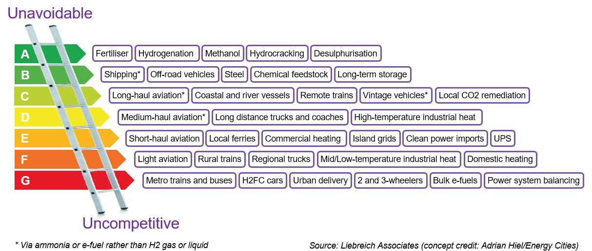

16 Hydrogen
For the past 100 years hydrogen has been used predominantly in ammonia production , oil refining, methanol production , and ten percent for other things like the plastic containers that keep salad fresh, the fabric of the seat cushions on your furniture, or the material on your winter jacket. Hydrogen has never had a market other than to make our food, make gasoline, and make the products we use every day. We never had the technology to use hydrogen for energy because the technology for hydrogen fuel cells has been incubating in its infancy for over 50 years. Well guess what? Hydrogen fuel cell technology has blossomed in the past decade to bear fruit for a clean energy future. We don’t need to use hydrogen for refining oil in a future state economy, and we don’t need to make it like our fathers, grandfathers, and great grandfathers used to in the early 1900s. It’s misleading to use century old backward looking stats as the basis for a forward-looking study when new blue hydrogen investments will be using autothermal reformation (ATR) and carbon sequestration.
RMP (2021) The Truth about Blue Hydrogen
ATR
Kim Abstract
The autothermal reforming (ATR) process for hydrogen production saves considerable energy for the reaction compared with endothermic steam methane reforming (SMR). However, it requires a supply of pure oxygen, for which an air separation unit (ASU) is needed; this hinders the adoption of ATR in industrial applications because of both the high capital and operating costs. At the same time, in liquefied natural gas (LNG) regasification terminals, the cold energy from the regasification process is typically wasted. Coincidentally, the temperature of this waste cold energy matches that required for ASU operation. Thus, in this paper, a novel ATRprocess is proposed in which an ASU and LNG regasification are integrated in order to make use of the cold energy as an operating utility and achieve hydrogen production from the LNG. For the sake of comparison, the proposed system and a conventional SMR process are optimized using a genetic algorithm to evaluate and benchmark its performance. With an LNG feed stream of 827.5 kmol/h, the optimal case of the proposed system produces 2508.0 kmol/h hydrogen gas with a purity of 99.2%; the exergy destruction is reduced by 18.6% and its overall exergy efficiency is approximately 25.4% higher than that of the SMR process. Also, an economic evaluation is performed using the net present value (NPV) as an indicator. The NPV of the proposed system is 338.9 million USD, which is 72.6% higher than that of hydrogen production with the SMR process from LNG.
[Kim (2021) Process Integration of an Autothermal Reforming Hydrogen Production System with Cryogenic Air Separation and Carbon Dioxide Capture Using Liquefied Natural Gas Cold Energy}(https://pubs.acs.org/doi/10.1021/acs.iecr.0c06265#)
Csiro
A combination of SMR and combustion of the fuel (methane), where steam is added to the oxidation process. The heat from the oxidation component supplies the energy required for the steam reforming process. Why is it important?
Steam methane reforming and partial oxidation are integrated into a single system, in which heat integration has been incorporated. Characteristics
Inputs: Hydrocarbons, oxygen, steam, heat
By-products: CO2
Operating temperature: >500°C
Energy efficiency: 60-75%Benefits
High selectivity to syngas
Flexible H2/CO ratio for syngas production, for subsequent production of synthetic fuels
Less clean-up required than pyrolysis options
Can use CO2 as a reagent
Lower process temperature than partial oxidation
Heat from fuel combustion is used to supplement the SMR component - lower parasitic heat load as a result
The SMR and combustion components are integrated into a single unit
Low carbon/soot formation which minimises pressure drop and reduces OPEX
Compact design, small footprint relative to other fossil fuel conversion methods
Rapid start-up timeLimitations
Extensive control system required
Requires air or oxygen
Requires CCUS to achieve low carbon emissionsCsiro (2023) Autothermal reforming (dry or steam)
16.1 Home heating Hydrogen
Guardian
In the remote hills of Cumbria, a few miles north of Hadrian’s wall, three nondescript terrace houses stand side by side, quietly offering a glimpse of a low-carbon future.
The houses are intentionally unremarkable in every way but one: they are the first in the UK to run on a blend of clean-burning hydrogen as part of the most sophisticated hydrogen testing facility in the world. Welcome to Hystreet.
Engineers at the five-hectare site are testing whether hydrogen can safely replace the fossil-fuel gas pumped through transmission pipes and local grid networks into British homes as part of the government’s efforts to meet climate targets.
“Ninety-nine percent of people don’t think about where their gas comes from, or how it gets there,” says Antony Green, National Grid’s hydrogen tsar and head of the FutureGrid project. His task is to create a realistic replica of the UK’s gas system to test whether the same pipelines that have carried gas from the North Sea into homes since the 1970s could transport low-carbon hydrogen in the future.
Heating British homes accounts for 15% of the country’s total emissions, meaning a low-carbon alternative will be crucial to cut emissions to net zero by 2050. But the testing site is also key to understanding how hydrogen can be transported to major factories and industrial clusters to help tackle emissions from polluting factories and power plants.
“The evidence we have built over the last few years shows that we can do this,” Green says, walking along the length of a giant gas pipe. “It’s all very well and good doing the paperwork. But you still need to prove it.”
Using the UK’s existing gas infrastructure to carry hydrogen is no simple task. It is more combustible than the traditional methane-rich gas we have learned to use safely in our homes, and its smaller molecules mean it is three times more likely to leak from pipelines or into homes than fossil gas. On the plus side, hydrogen is also lighter, meaning it is more likely to dissipate than to pool and create a combustion threat.
Like natural gas, hydrogen is odourless, so would have the same distinctive smell added to help people quickly notice a leak. When it burns, it is hard to see in daylight, so the hob has an adjustment that produces a visible flame, similar to that of a traditional gas hob but redder in colour.
For the sceptics, the challenge of overhauling the UK’s 4,000 miles of underground gas pipelines is too costly a step when heating and cooking could run on a low-carbon electricity system instead.
The opposing factions in the debate run along predictable industry lines. National Grid and other companies that operate legacy gas infrastructure or gas production projects tend to favour home hydrogen, to prolong the life of existing assets. Energy companies that invest in low-carbon electricity generation tend to back electric heat pumps as the future for low-carbon homes.
Blue Hydrogen
Although blue hydrogen is widely considered “low-carbon”, it has failed to win favour among climate campaigners. Despite using carbon-capture technology to trap emissions from the process, about 10% to 15% of the CO2 in the fossil gas would find its way to the atmosphere. It would also require continuing offshore gas production, which carries a hefty carbon footprint.
16.2 Green vs Blue Hydrogen
Longdon Abstract
Hydrogen produced using fossil fuel feedstocks causes greenhouse gas (GHG) emissions, even when carbon capture and storage (CCS) is used. By contrast, hydrogen produced using electrolysis and zero-emissions electricity does not create GHG emissions. Several countries advocating the use of ‘clean’ hydrogen put both technologies in the same category. Recent studies and strategies have compared these technologies, typically assuming high carbon capture rates, but have not assessed the impact of fugitive emissions and lower capture rates on total emissions and costs. We find that emissions from gas or coal based hydrogen production systems could be substantial even with CCS, and the cost of CCS is higher than often assumed. Carbon avoidance costs for high capture rates are notable. Carbon prices of $22–46/tCO2e would be required to make hydrogen from fossil fuels with CCS competitive with hydrogen produced from fossil fuels without CCS. At the same time there are indications that electrolysis with renewable energy could become cheaper than fossil fuel with CCS options, possibly in the near-term future. Establishing hydrogen supply chains on the basis of fossil fuels, as many national strategies foresee, may be incompatible with decarbonisation objectives and raise the risk of stranded assets.
Longdon Highlights
• Emissions from gas or coal based hydrogen systems are substantial even with CCS. • Fugitive emissions are rarely included in national and international H2 strategies. • CCS is an expensive option for decarbonising hydrogen production. • Electrolysis with renewable energy could become cheaper than fossil fuels with CCS.
Guardian
Green hydrogen beats blue on emissions and financial cost.
Guardian (2021) Green hydrogen beats blue on emissions and financial cost
16.3 White Hydrogen
Ambrose
For more than a decade, the village of Bourakébougou in western Mali map has been powered by a clean energy phenomenon that may soon sweep the globe.
The story begins with a cigarette. In 1987, a failed attempt to drill for water released a stream of odourless gas that one unlucky smoker discovered to be highly flammable. The well was quickly plugged and forgotten. But almost 20 years later, drillers on the hunt for fossil fuels confirmed the accidental discovery: hundreds of feet below the arid earth of west Africa lies an abundance of naturally occurring, or “white”, hydrogen.
Today, it is used to generate green electricity for Bourakébougou’s homes and shops. But geologists believe that untapped reservoirs of white hydrogen in the US, Australia and parts of Europe have the potential to provide the world with clean energy on a far greater scale.
the US Geological Survey has said that even if only a small fraction of hydrogen under the Earth’s surface could be recovered, there would probably be enough to last for hundreds of years.
One borehole drilled in 1921 on Kangaroo Island produced as much as 80% hydrogen. Another, on the nearby Yorke peninsula, was close to 70%.
The burgeoning hydrogen industry’s supporters include Bill Gates. The billionaire investor, through his company Breakthrough Energy, was reportedly one of five backers to pour about $90m into Koloma, a company based in Colorado which is hunting natural hydrogen along the US’s Midcontinental Rift System.
The 1,200-mile tectonic fault running through North America is also being targeted by Natural Hydrogen Energy, a startup due to begin exploration work alongside Australia’s HyTerra in Kansas later this month.
In Europe, which remains gripped by a gas supply crisis as a result of of Russia’s invasion of Ukraine, white hydrogen has been discovered in France, in the Lorraine mining basin. And a British company, Getech, is adapting software developed to find oil to locate hydrogen deposits.
The true potential of white hydrogen will depend on the findings from these early projects.
Oil companies including Total and Engie in France, and Repsol in Spain, have taken modest steps on white hydrogen. They don’t want stranded assets, but white hydrogen could cannibalise their primary market.
Ambrose (2023) Prospectors hit the gas in the hunt for ‘white hydrogen’
16.3.1 How green is blue hydrogen?
Howarth
Hydrogen is often viewed as an important energy carrier in a future decarbonized world. Currently, most hydrogen is produced by steam reforming of methane in natural gas (“gray hydrogen”), with high carbon dioxide emissions. Increasingly, many propose using carbon capture and storage to reduce these emissions, producing so-called “blue hydrogen,” frequently promoted as low emissions. We undertake the first effort in a peer-reviewed paper to examine the lifecycle greenhouse gas emissions of blue hydrogen accounting for emissions of both carbon dioxide and unburned fugitive methane. Far from being low carbon, greenhouse gas emissions from the production of blue hydrogen are quite high, particularly due to the release of fugitive methane. For our default assumptions (3.5% emission rate of methane from natural gas and a 20-year global warming potential), total carbon dioxide equivalent emissions for blue hydrogen are only 9%-12% less than for gray hydrogen. While carbon dioxide emissions are lower, fugitive methane emissions for blue hydrogen are higher than for gray hydrogen because of an increased use of natural gas to power the carbon capture. Perhaps surprisingly, the greenhouse gas footprint of blue hydrogen is more than 20% greater than burning natural gas or coal for heat and some 60% greater than burning diesel oil for heat, again with our default assumptions. In a sensitivity analysis in which the methane emission rate from natural gas is reduced to a low value of 1.54%, greenhouse gas emissions from blue hydrogen are still greater than from simply burning natural gas, and are only 18%-25% less than for gray hydrogen. Our analysis assumes that captured carbon dioxide can be stored indefinitely, an optimistic and unproven assumption. Even if true though, the use of blue hydrogen appears difficult to justify on climate grounds.
Howarth (2021) How green is blue hydrogen?
St.John
Why blue hydrogen can be worse than burning gas
After spending several years searching for evidence, Howarth teamed up with Mark Z. Jacobson, a professor of civil and environmental engineering at Stanford University, to conduct their own research. The results, published in August 2021, indicate that in almost all cases, blue hydrogen ends up emitting more greenhouse gases compared to simply burning fossil gas directly for heating and industrial processes.
Several factors contribute to this counterintuitive result, Howarth said. The first is that wells, pipelines, compressor stations and other gas-delivery infrastructure leak methane, the primary component of fossil gas. Methane is a relatively short-lived but powerful greenhouse gas, with more than 80 times the global warming impact of carbon dioxide over a 20-year period.
“You can’t use natural gas without fugitive methane,” Howarth said. “It may not be a huge amount, but it has a huge climate impact.”
Howarth and Jacobson assumed that 3.5 percent of fossil gas used to make hydrogen is leaked — higher than what’s reported by the oil and gas industry and tracked by the U.S. Environmental Protection Agency, but in line with recent third-party analysis from satellite and aerial monitoring. They also considered emissions from the energy needed to drive the gray-hydrogen steam methane reformation (SMR) process, which is usually generated with fossil gas in today’s hydrogen facilities, as well as the energy needed to operate carbon capture equipment.
These emissions largely erased the climate benefits of capturing carbon from SMR plants, yielding only a 9 percent to 12 percent reduction in CO2 equivalent emissions compared to unabated gray hydrogen production, the analysis found.
What’s more, the energy used to convert fossil gas to hydrogen and capture the carbon emissions increases the emissions impact of every unit of blue hydrogen compared to the comparable unit of fossil gas it might replace for heating and industrial purposes, which make up a significant portion of the end uses being considered by many clean hydrogen hubs. Due to this extra energy and emissions impact, burning blue hydrogen for these purposes is about 20 percent more emissions-intensive than simply burning fossil gas to begin with, the analysis found.
Even if the assumed methane leakage from upstream fossil-gas infrastructure in the researchers’ models was reduced to about 1.5 percent — roughly the current estimate from EPA — the use of blue hydrogen only reduced greenhouse gas emissions by 18 to 25 percent compared to making gray hydrogen, and the emissions associated with burning it for fuel remained greater than sticking with fossil gas, according to the report.
A February report from the Energy Futures Initiative, a nonprofit research group run by former Energy Secretary Ernest Moniz, states that the average “life-cycle emissions” of blue-hydrogen production — a measure that includes leakage from gas wells and pipelines as well as gas used to power hydrogen production and carbon capture — add up to more than a third of the typical emissions from gray-hydrogen production and are “often out of control of the production facility.”
Nor is it clear that blue hydrogen can be cost-competitive against green hydrogen in the long run. But the scale of blue hydrogen projects eclipses that of the more numerous but smaller green hydrogen projects, accounting for 95 percent of the total production capacity. This indicates the scale of the fossil fuel industry’s ambitions for expanding the use of fossil gas to serve the hydrogen market.
St.John (2023) The case against the US government’s big ‘blue hydrogen’ bet
16.4 Wind to Hydrogen
Siemens Gamesa and Siemens Energy have announced plans to invest €120m ($146m) in a five-year strategy to unlock the potential of harvesting green hydrogen from offshore windpower.

The companies are collaborating on a solution to integrate an electrolyzer into an offshore wind turbine as a single synchronized system to directly produce green hydrogen.
16.5 Hydrogen Aviation
Heynes
In 2008, Boeing flew the first hydrogen-powered aircraft whilst ZeroAvia flew the world’s first hydrogen-powered commercial aircraft in 2020. But the main industry player, already in the works to present hydrogen-powered aircraft to the market, is Airbus.
For hydrogen-powered aircraft, hydrogen can be used in two ways: as a fuel source for fuel cells, when hydrogen reacts with oxygen to produce electricity that powers the engine or alternatively it can be used directly as a fuel source in a modified engine.
Airbus is looking at both these methods for aircraft with the company presenting three models of modified aircraft that would be operated using hydrogen and has already committed to have the first aircraft in service by 2035.
Because hydrogen can be extracted from water, airports could generate their own hydrogen fuel, reducing the need for fuel transportation, eliminating related emissions and possible transportation safety hazards.
The potential of hydrogen as aviation fuel is undeniable, but there is still a long way to go. The constantly growing attention to aviation sustainability will act as a catalyst in making a hydrogen-powered aircraft a reality.
Revolutionary hydrogen technology for aviation and urban air mobility has been unveiled today (2nd March) by HyPoint – and the Californian fuel cell specialist is expecting to start shipping the product in 2022.
HyPoint says its NASA award-winning turbo air-cooled hydrogen fuel cell system will cut years off commercial delivery timelines for hydrogen aircrafts and unlock the emerging hydrogen aviation market.
The company claims its technology delivers an unprecedented combination of specific power and energy density and has passed key validation testing to prove its technical viability.
16.6 Green Hydrogen Cost Reduction
IRENA
Green hydrogen currently costs between two and three times more than “blue” hydrogen, which is produced using fossil fuels in combination with carbon capture and storage (CCS). Falling renewable power costs and improving electrolyser technologies could make “green” hydrogen cost competitive by 2030.
The International Renewable Energy Agency (IRENA) outlines strategies to reduce electrolyser costs through continuous innovation, performance improvements and upscaling from megawatt (MW) to multi-gigawatt (GW) levels.
Among the findings:
Electrolyser design and construction: Increased module size and innovation with increased stack manufacturing have significant impacts on cost. Increasing plant size from 1 MW (typical in 2020) to 20 MW could reduce costs by over a third. Optimal system designs maximise efficiency and flexibility.
Economies of scale: Increasing stack production with automated processes in gigawatt-scale manufacturing facilities can achieve a step-change cost reduction. Procurement of materials: Scarcity of materials can impede electrolyser cost reduction and scale-up.
Efficiency and flexibility in operations: Power supply incurs large efficiency losses at low load, limiting system flexibility from an economic perspective.
Industrial applications: Design and operation of electrolysis systems can be optimised for specific applications in different industries. Learning rates: Based on historic cost declines for solar photovoltaics (PV), the learning rates for fuel cells and electrolysers – whereby costs fall as capacity expands – could reach values between 16% and 21%.
Ambitious climate mitigation: An ambitious energy transition, aligned with key international climate goals, would drive rapid cost reduction for green hydrogen. The trajectory needed to limit global warming at 1.5oC could make electrolysers an estimated 40% cheaper by 2030.
16.7 Green Hydrogen- ‘Gas of the Future?’
Tooze
Already one hundred and fifty years ago Jules Verne touted hydrogen as a possible fuel. In the late 1960s GM showed off its electrovan powered by a hydrogen fuel cell. In the 1990s and 2000s the hydrogen economy was again in vogue. President Bush and Governor Schwarzenegger were both fans. But again and again, the great hydrogen revolution failed to materialize. H2 began to acquire the reputation as the fuel that had the brightest future and always would have.
But history is not fate. And our times are different. Whereas, previously, hydrogen was touted as an alternative to petrol. The urgency of the climate agenda and the push for net zero has widened its role. Green hydrogen is no longer seen just as a long-shot substitute for gasoline. It is touted as the Swiss army knife of the energy transition, suitable for applications across industry, transport, agriculture, home-use and for the power sector itself.
In recent years a huge coalitions of corporate interests has assembled behind green hydrogen. The Hydrogen Council, launched at Davos in January 2017, has grown into a massive corporate array advised by top tier consultancy McKinsey.
One recent compilation found that hydrogen projects currently under discussion totaled a staggering 957 GW in electrolyzer capacity. The Hydrogen Council and the IEA settle more modestly for a figure of 500 GW by 2050. Currently, the combined rating of all hydrogen electrolyzers in operation around the world is less than 1 GW.
The hype around hydrogen is indicative of the way in which the energy transition has morphed, some might say mutated, into an industrial policy race with hundreds of billions in subsidy, markets numbered in trillions and huge slices of the economic structure up for grabs.
$1.1 trillion going into the energy transition in 2022. This surge in spending is good news, but what is less clear is the direction of travel. This need not be seen as a bad thing. It would be naive to imagine that a process as complex as the energy transition can be planned decades in advance from the top down. Governments, businesses, producers and consumers are all embarked on a process of experimentation and learning. And, by their decision, weighted highly unequally, they are creating facts on the ground, which if not irreversible certainly imply long-term commitment.
Hydrogen may burn relatively cleanly and yield electricity through fuel cells, but since hydrogen has to be produced through the application of energy, the process is inherently inefficient. Why not simply apply the electricity you are using to make hydrogen to the task at hand?
The members of the hydrogen coalition are all obviously incumbent fossil fuel and petrochemical interests looking for a bridge to the new era. If realized, their ambitious hydrogen projects may overload the available supply of green power, for little real benefit. By diverting badly needed clean power, green hydrogen vanity projects may even slow down the energy transition. And the subsidy regimes that are being put in place could become self-perpetuating. As Gernot Wagner and Danny Cullenward recently warned, “hydrogen could become the next corn ethanol”, a ruinously inefficient and environmentally damaging creature of subsidies that are too big to kill.
What hydrogen exposes is that there is still huge uncertainty about many basic parameters of the low-carbon future, about the technologies that will emerge as dominant, the likely structure of prices and the patterns of supply and demand for key materials and other inputs.
Hydrogen has never in fact been produced at scale by hydrolysis. Total global capacity is less than 1 GW. We simply don’t know if any of it can be done.
There is a real risk that big new hydrogen projects might divert clean power from more efficient strategies for decarbonization.
The key frontline in debates about the huge new hydrogen subsidies concerns additionality.
In the debate about hydrogen there is one fact that too often goes unremarked. The hydrogen economy is not a hypothetical. Our economies as they stand already rely on the production of huge volumes of hydrogen for two basic chemical processes: the processing of oil and the production of fertilizer.
For these purposes we produce over 90 million tons of hydrogen annually. It is an industry worth $160 billion or so. And because hydrogen is won from natural gas and sometimes coal it is an extremely dirty process. These uses for hydrogen do no have the glamour of green aviation or fuel-cell vehicles. But they are essential and they are very dirty. Globally, hydrogen production today accounts for emissions equivalent to those of an economy like that of Germany.
Demand will be eased by the winding down of the oil industry which is the major consumer of industrial hydrogen. But the rest of the chemical industry remains, most crucially of all the fertilizer industry.
Industrial hydrogen is produced on the spot in chemicals plants. It isn’t shipped in like coal or oil or natural gas.
Creating a market for industrial green hydrogen is not simply a matter of technology. It requires the creation of a new commodity market and a new wave of highly specific investment.
Tooze (2023) Carbon notes #5: Green hydrogen, the “gas of the future”?
16.8 Hydrogen Mirage?
Tooze
In technological terms, hydrogen may represent a shimmering image of possibility on a distant horizon, but in political economy terms, it has a more immediate role. It is a route through which existing fossil fuel interests can imagine a place for themselves in the new energy future. The presence of oil majors and energy companies in the ranks of the Hydrogen Council is not coincidental. Hydrogen enables natural gas suppliers to imagine that they can transition their facilities to green fuels. Makers of combustion engines and gas turbines can conceive of burning hydrogen instead. Storing hydrogen or ammonia like gas or oil promises a solution to the issues of intermittency in renewable power generation and may extend the life of gas turbine power stations. For governments around the world, a more familiar technology than one largely based on solar panels, windmills, and batteries is a way of calming nerves about the transformation they have notionally signed up for.
Tooze (2023) Hydrogen Is the Future—or a Complete Mirage
Collins on Liebreich
Liebreich’s Hydrogen Ladder

Liebreich (2021) The Clean Hydrogen Ladder
Debunking Liebreich
RMP (2022) Michael Liebreich’s Hydrogen Ladder Debunked
Debunking Ulf Bossel
Dr. Bossel does not understand how our energy grid works and where waste is really occurring. Dr. Bossel’s thesis statement is that converting water to hydrogen is a wasteful use of electricity. Ironically, we often have more generating capacity than we can use or transmit and we are curtailing electricity generation that hydrogen production could easily soak up and save for cloudy and windless days. It’s actually wasteful to not create hydrogen because so much electricity is going unemployed. RMP will drive this point home throughout this rebuttal to Dr. Bossel’s thesis and we will look at data from various sources like CAISO to support this thesis argument. Economics is a complex subject and it’s imperative that all things are considered which is where Dr. Bossel’s arguments fail.
Producing, compressing, and storing hydrogen might seem wasteful in a laboratory analysis, but the opposite is true in the real world. Let’s talk about electricity “curtailment”. Curtailment of carbon zero renewable electricity is when wind & solar electricity generation capacity exceeds society’s immediate needs and the grid operator does not allow that electricity onto the grid. Terawatt hours are being wasted each year on grids around the globe because of not employing that capacity to store energy as hydrogen.
Dr. Bossel has made good contributions to the science of physics and makes good points about the energy density issues of methanol and ammonia versus those of compressed or liquefied H2. To those points, RMP finds common ground with Dr. Bossel. But, where economic science is concerned, Dr. Bossel’s thesis quickly falls apart and becomes not credible.
Dr. Bossel’s failure to include natural gas in his analysis shot his argument in the foot from the very first paragraph. By failing to demonstrate knowledge of how a high-voltage electricity grid works, Dr. Bossel further disqualifies himself as a credible source.
RMP (2017) Debunking Dr. Bossel’s Anti-Hydrogen Thesis
Debunking Mark Jacobsen - The Truth about Blue Hydrogen
Blue hydrogen has been making headlines this summer. It’s made from natural gas in a two-part process called autothermal reformation (ATR). The ATR process is different than the steam reformation (SMR) process used to make most hydrogen over the past century. There has never been a market for hydrogen for energy so we learn more & more each year about how to make zero, net zero, and low emission hydrogen for future markets. What distinguishes the ATR process of making hydrogen from the SMR process is a step called partial oxidation. In the first part of the ATR process, methane (CH4) is partially oxidized to create syngas. In the 2nd part of the ATR process, called a water-gas shift reaction, the syngas is mixed with steam to make carbon dioxide & hydrogen.
What makes the hydrogen “blue”, and why the US Department of Energy is talking about this pathway for hydrogen production, is that ~95% of the CO2 from the process is easily separated from the natural gas and can be permanently sequestered such that it will never reach our atmosphere. The reason this hydrogen is being called “net zero” is because the by-products of the process can be used to make the energy required to execute the process as well producing excess energy.
he first major flaw in the Jacobson/Howarth paper is that the study employs a 20-year window to assign a greenhouse gas equivalency to methane instead of the 100-year window the IPCC uses3. While it’s true methane is a powerful GHG that’s 100 times more potent than CO2, it goes away in about 12 years. Integrating methane’s warming potential over a 20-year window gives it a CO2 equivalency of 86 which is the figure that Howarth & Jacobson use in their study. Over a 100-year window, however, it’s only 28 which is 1/3 of the figure Howarth and Jacobson employ. The 20-year equivalency exaggerates the overall impact of methane emissions because over most of the 100-years, the methane would be long gone from the atmosphere.
The next major flaw in the report conflates fugitive methane emissions from oil production rather than natural gas production. Natural gas is often vented or flared at oil wells because there is no way to get it to market and it’s therefore unwanted. We need to eliminate the use of oil for so many reasons and natural gas emissions is just one more reason to add to the list. We need to eliminate the use of oil as soon as humanly possible. Oil wells are responsible for releasing more methane emissions from subsurface wells than natural gas wells or any other type of well. This point is conflated in the Jacobson/Howarth study further eroding is credibility.
It’s disingenuous to compare leakage rates at oil wells -vs- gas wells which is what the Howarth/Jacobson study does. This means the 2.6% figure for upstream emissions the Howarth/Jacobson study employs grossly overstates the emissions associated with use of natural gas.
The third and most deceptive flaw of the Howarth/Jacobson paper is the sleight of hand of basing calculations on old school steam methane reforming (SMR) rather than autothermal reformation (ATR).
One final flaw in the report is section 2.2 of the study calling out the extra power it would take to run the SMR process. This is actually how blue hydrogen achieves its ‘net zero’ claim through the ATR process. In section 2.2 of the Jacobson/Howarth study, Mark calculates 31.8g of CO2 are generated to create 1 MJ of hydrogen. The math is correct, but the irony again is sleight of hand in that this is the amount of CO2 saved because it will be sequestered. By capturing the CO2 that would otherwise be necessary to create the hydrogen while also having surplus power for nearby homes & businesses, the blue hydrogen produced earns its “net zero” claim.
The math and chemical equations in the Howarth/Jacobson paper are not scientifically accurate as laid out above. But the bigger problem is the way the study uses sleight of hand tricks to get you to look backward instead of forward. Howarth and Jacobson go to lengths calculating the chemical mole weights of carbon dioxide from making hydrogen from steam reformation. On page four of the study there’s a table to summarize how much carbon dioxide is released as flue gas in the SMR process. Let me say the same thing I said when I debunked Dr. Bossel’s pseudo-scientific paper: I don’t dispute the Howarth/Jacobson chemical calculations per se, but by plugging the wrong numbers into his equations, Mark arrives at the wrong results.
RMP (2021) The Truth about Blue Hydrogen
Mark Jacobsen Abstract
Hydrogen is often viewed as an important energy carrier in a future decarbonized world. Currently, most hydrogen is produced by steam reforming of methane in natural gas (“gray hydrogen”), with high carbon dioxide emissions. Increasingly, many propose using carbon capture and storage to reduce these emissions, producing so-called “blue hydrogen,” frequently promoted as low emissions. We undertake the first effort in a peer-reviewed paper to examine the lifecycle greenhouse gas emissions of blue hydrogen accounting for emissions of both carbon dioxide and unburned fugitive methane. Far from being low carbon, greenhouse gas emissions from the production of blue hydrogen are quite high, particularly due to the release of fugitive methane. For our default assumptions (3.5% emission rate of methane from natural gas and a 20-year global warming potential), total carbon dioxide equivalent emissions for blue hydrogen are only 9%-12% less than for gray hydrogen. While carbon dioxide emissions are lower, fugitive methane emissions for blue hydrogen are higher than for gray hydrogen because of an increased use of natural gas to power the carbon capture. Perhaps surprisingly, the greenhouse gas footprint of blue hydrogen is more than 20% greater than burning natural gas or coal for heat and some 60% greater than burning diesel oil for heat, again with our default assumptions. In a sensitivity analysis in which the methane emission rate from natural gas is reduced to a low value of 1.54%, greenhouse gas emissions from blue hydrogen are still greater than from simply burning natural gas, and are only 18%-25% less than for gray hydrogen. Our analysis assumes that captured carbon dioxide can be stored indefinitely, an optimistic and unproven assumption. Even if true though, the use of blue hydrogen appears difficult to justify on climate grounds.
Jacobsen (2021) How green is blue hydrogen? (Request pdf from authors)